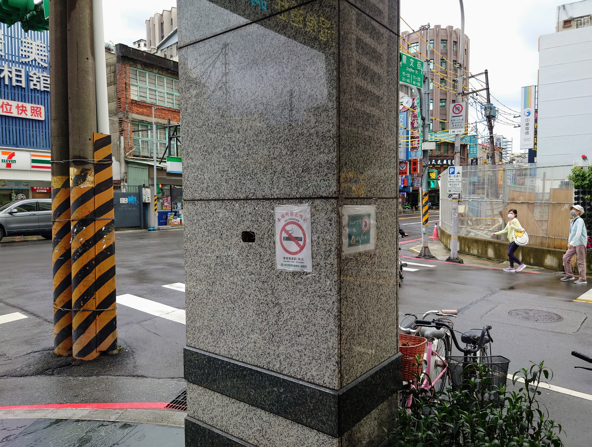
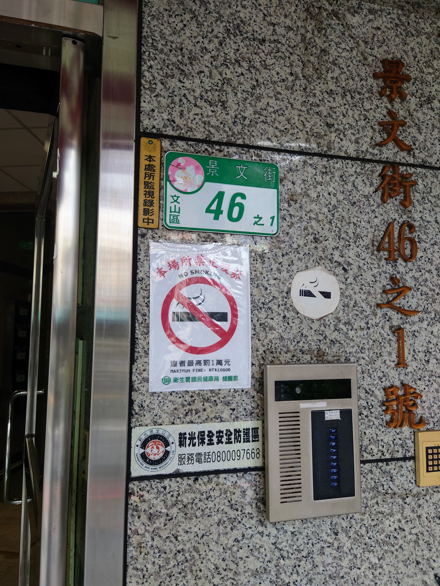
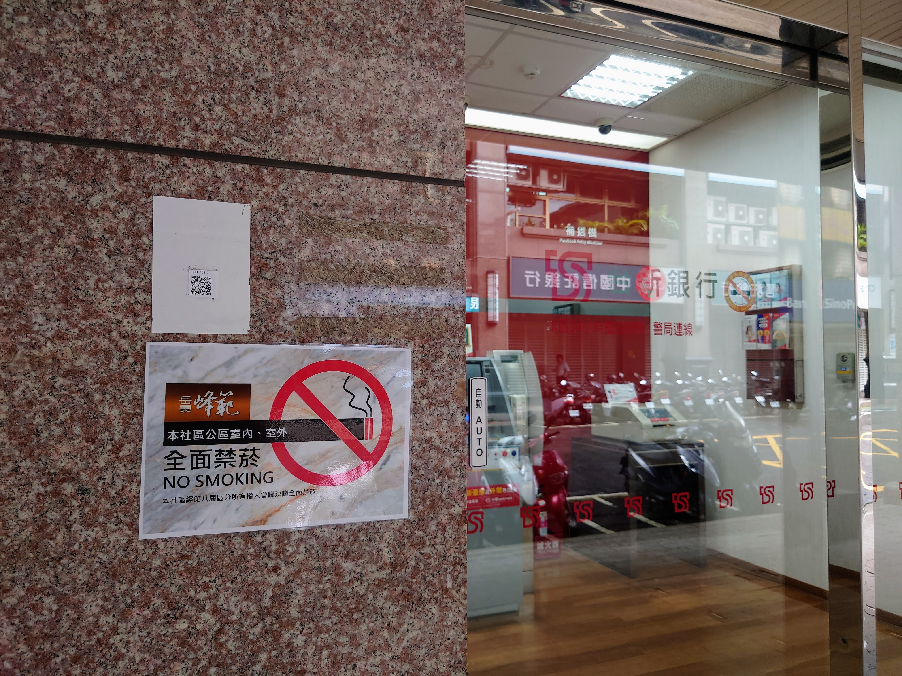
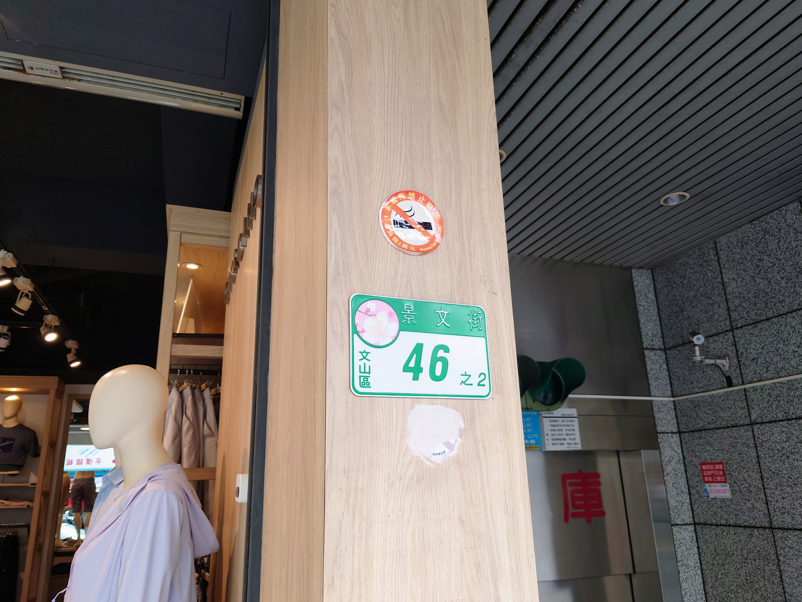
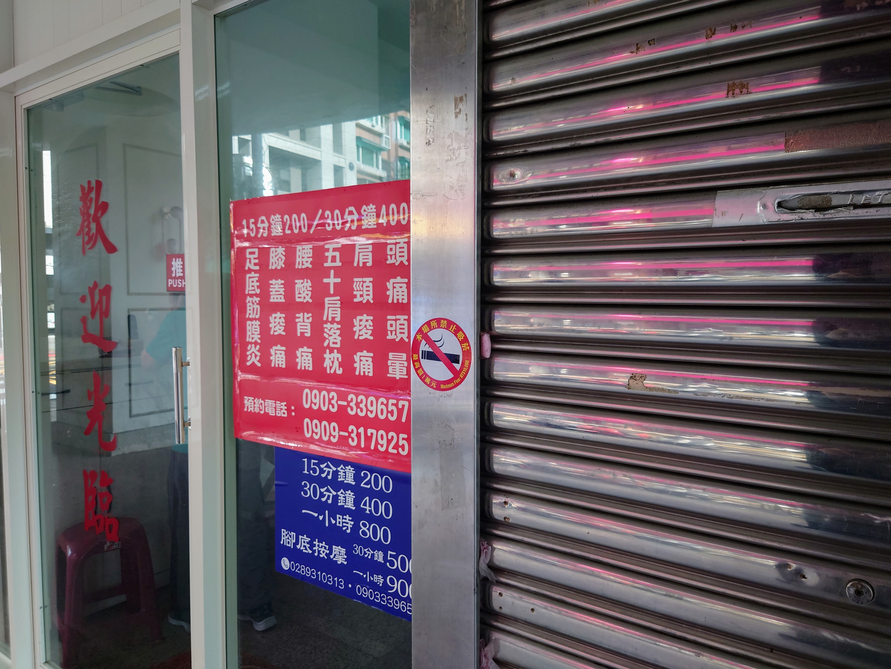
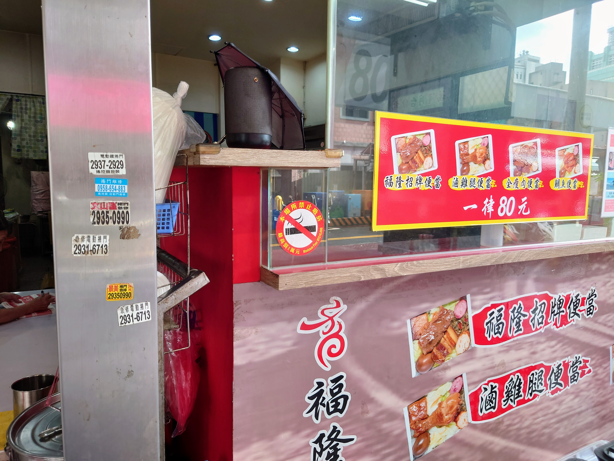
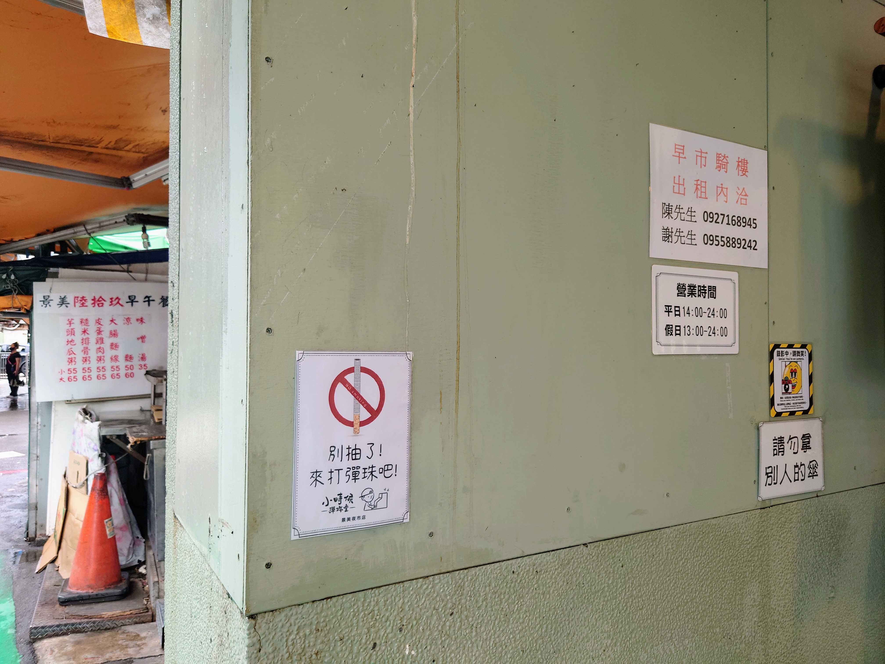

為健康呼吸，為清新家園
支持「馥麗第社區」公共區域全面禁菸
來自鄰居的真心話
您好，我們是住在社區裡、同樣關心家人健康的住戶。我們發起這個提案，不是為了指責任何人，而是真心希望能為孩子們、為長輩、也為我們自己，打造一個更清新、更健康的居住環境。這需要每一位芳鄰的理解與支持，讓我們一起努力！
提案說明
主旨：建請將社區公共區域全面禁菸納入規約。
本社區位處景美中心，常有民眾駐足於前庭吸菸。垃圾可以清運、噪音可以隔絕，唯獨二手菸的危害，住戶避無可避。世界衛生組織（WHO）已明確指出，任何通風或空調系統皆無法有效過濾二手菸的有害物質，唯有「完全無菸」的環境，才能保障健康。
科學證據顯示，二手菸會顯著提升癌症、心血管、呼吸及神經系統等疾病的風險。在尚無任何有效方式能隔絕菸害的前提下，為維護全體住戶的健康權，謹建議本社區公共區域（含前庭、梯廳、走廊等）應實施全面禁菸。
此案可依據 《菸害防制法》第19條及《公寓大廈管理條例》第16條與第23條，經區分所有權人會議決議，將禁菸事項載明於社區規約，並於公共區域設立清晰之禁菸標示，以共同打造清新、健康的居住環境。
左鄰右舍的健康共識
走在景美街頭，您會發現，越來越多的店家、社區與鄰居，都已經自主貼出禁菸標示。從官方的勸導單張、社區的統一公告，到店家充滿創意的提醒，都顯示「打造無菸環境」早已是我們生活圈的共同價值。我們並不孤單，只是將這份共識，更明確地落實在我們的家園。

景後街 99 號

景文街 46-1 號

景文街 46-1 號

車前路 11-1 號

景文街 46-2 號
景後街 130 號

景美街 43-1 號

景美街 43 號

景文街 71 號
常見問與答 (Q&A)
提案的科學與法源基礎
如何支持我們？
打造無菸家園需要你我共同努力。您的每一個支持，都是讓社區更美好的重要力量！
分享資訊
將這個網頁分享給您的鄰居或社區群組，讓更多人了解提案內容。
友善溝通
與鄰居們聊聊這個議題，匯集更多正面的意見與支持。
參與會議
請務必參與將召開的區分所有權人會議，投下您關鍵的同意票！
輕鬆分享，凝聚共識
掃描 QR Code，將此頁面分享給更多鄰居！